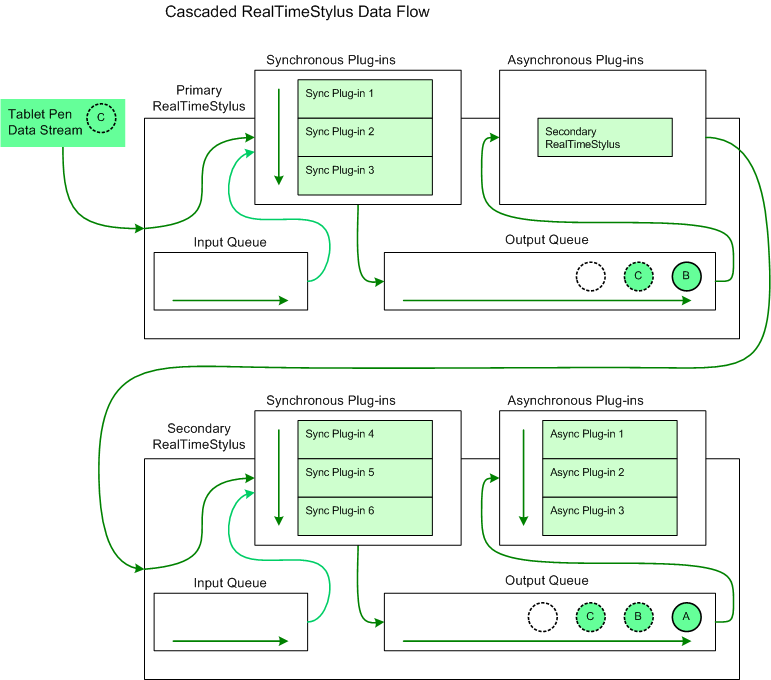

The cascaded RealTimeStylus model enables you to use two RealTimeStylus objects, each running on a different thread. With this model, you attach a secondary RealTimeStylus object to a primary RealTimeStylus object. The secondary RealTimeStylus object is attached as the only asynchronous plug-in in the primary RealTimeStylus object's asynchronous plug-in collection.
The cascaded RealTimeStylus model may be useful in the following scenarios.
The following diagram illustrates the flow of tablet pen data through two cascaded RealTimeStylus objects and their plug-in collections.

In this diagram the circle lettered "A" represents tablet pen data that has already been processed by both the primary and secondary RealTimeStylus objects and has been placed on the secondary RealTimeStylus object's output queue. The circle lettered "B" represents tablet pen data that has already been processed by the primary RealTimeStylus object and added to the primary RealTimeStylus object's output queue and has not yet been sent to the secondary RealTimeStylus object. The circle lettered "C" represents the tablet pen data that the primary RealTimeStylus object is currently processing. It is sent to the synchronous plug-in collection and placed on the output queue. The empty circle represents the position in the output queue where future tablet pen data is added.
If you use the default RealTimeStylus constructor, you create a RealTimeStylus object that can only accept input from another RealTimeStylus object.
The following list describes the constraints associated with using the cascaded RealTimeStylus model.
| Member | Behavior |
|---|---|
| GetDesiredPacketDescription | This method returns the information from the primary RealTimeStylus object. If the secondary RealTimeStylus is not attached to a primary RealTimeStylus object, this method returns the default value. |
| SetDesiredPacketDescription | This method raises an InvalidOperationException exception. |
| GetStyluses | This method returns the information from the primary RealTimeStylus object. If the secondary RealTimeStylus is not attached to a primary RealTimeStylus object, this method returns an empty array. |
| Enabled | Getting this property returns the information from the primary RealTimeStylus object. If the secondary RealTimeStylus is not attached to a primary RealTimeStylus object, getting this property returns the default value. Note: Setting this property raises an InvalidOperationException exception. |
| WindowInputRectangle | Getting this property returns the information from the primary RealTimeStylus object. If the secondary RealTimeStylus is not attached to a primary RealTimeStylus object, getting this property returns the default value. Note: Setting this property raises an InvalidOperationException exception. |
Â
Â